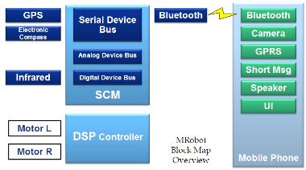
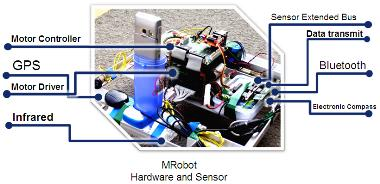

- There're three components in MRobot: SCM (Single Chip Machine), DSP Controller and the Mobile Phone.
- User uses mobile phone to interact with the program, while in some usages the phone could send commands automatically. The mobile phone uses Bluetooth to send or receive commands and information to/from the SCM. SCM gets data from Mobile phone in order to direct the DSP Controller, at the same time it gets data from other sensors and transport them back to phone.
- The calculation, decision-making and path-planning are done within the phone. The SCM is treated as an interface between user and sensors/motors.


- Click above to view a larger figure.
- The hardware and sensors cost several hundereds Yuan in total.

- Develop kit: J2ME wireless toolkit 2.2 for Windows
- Develop tool: Eclipse 3.1 + EclipseMe 1.6.1
- Mobile Phone: Nokia 6681
- Programs (see Demo page for video clips):
- Use keyboard on the phone to control robot (M-Drive Toy mode)
- Read in GPS data, display the position on a map, and indicate people
- Guard in the room. If the door is open, give alarm and send short message to another phone (M-Guard mode)
- Guide people on the road, stops when meeting obstacles (M-Eye Guide mode)